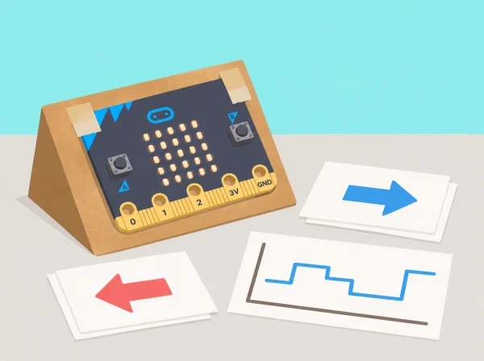

Una maqueta que aprén patrons
🏷️ Dades, models i patrimoni
🌱 Situació, repte i intenció
🎯 Aprenentatges i vocabulari
- Explicar el cicle d’un model: exemples etiquetats, entrenament, prova i revisió.
- Preparar dades de moviment consistents per controlar quines variacions veu el model.
- Avaluar casos nous, errors i diferències entre grups de prova abans d’activar una resposta en la maqueta.
- Iterar una solució amb l’usuari al control i documentar-ne els límits, els riscos i les condicions d’ús.
🧰 Materials i preparació
Per a entrenar i provar, connecteu una micro:bit a CreateAI seguint la guia oficial de connexió i ús, recopileu dades de moviment de la maqueta, etiqueteu-les, entreneu el model i proveu-lo amb mostres diferents. En navegador d’ordinador, la connexió sense fil requereix Chrome o Edge i Bluetooth habilitat; també es pot usar l’app oficial compatible en tauleta.
Des de CreateAI, obriu el projecte en MakeCode, reviseu els blocs de cada acció —inclosa l’eixida «unknown»—, descarregueu el programa i el model en una micro:bit V2 i proveu-los sense l’ordinador. Qualsevol versió de micro:bit pot recollir dades, entrenar i provar el model; per executar-lo amb MakeCode en la placa cal V2. Es pot reutilitzar la mateixa placa de recollida per descarregar el projecte, reconnectant-la després si cal continuar capturant. Fixeu-la a una maqueta lleugera, no al cos.
Si la connexió sense fil o CreateAI no està disponible, feu les sessions amb targetes i dades simulades i indiqueu clarament que no s’ha executat el model físic.
📅 Seqüència didàctica
Presentar la IA (Introducing AI)
Fase 1 · Activem i prediem
Presenteu el centre d’interpretació i la maqueta que voldria canviar de panell quan s’inclina. Abans de parlar d’intel·ligència artificial, cada equip dibuixa com pensa que un dispositiu podria distingir dues orientacions i anota què hauria de preparar una persona perquè funcionara.
Fase 2 · Explorem i construïm
Classifiqueu targetes pròpies d’objectes i serveis coneguts —temporitzador, alarma, mapa digital, llum automàtica, calculadora— segons si segueixen una regla escrita o si poden aprendre patrons a partir de dades. Deixeu algunes targetes sense classificar al primer intent perquè l’alumnat puga proposar una pregunta abans de decidir.
Fase 3 · Expliquem i registrem
Compareu els criteris dels equips: quines proves o informació els han fet classificar cada exemple? Distingiu un sistema que aplica una regla explícita d’un model que ajusta patrons amb exemples. Registreu en un diagrama qui defineix el propòsit, tria les dades i interpreta el resultat.
Fase 4 · Apliquem i millorem
Reviseu les targetes dubtoses després d’escoltar un altre grup i afegiu-hi un exemple local, com ara un indicador de l’aula o del centre. Escriviu una definició de dues frases per a una família visitant i reviseu-la perquè no atribuïsca intencions, emocions ni comprensió humana al model.
Fase 5 · Comprovem i reflexionem
Trobar patrons en dades (Exploring patterns in data)
Fase 1 · Activem i prediem
Recupereu la classificació de la sessió anterior i pregunteu què vol dir trobar un patró. Cada grup prediu dues maneres diferents d’ordenar un conjunt de targetes amb fletxes, angles dibuixats o orientacions d’una maqueta.
Fase 2 · Explorem i construïm
Ordeneu les targetes primer per una regla visible —direcció de la fletxa— i després per una altra —angle aproximat o posició inicial. Feu una tercera classificació amb una targeta que no encaixe clarament en cap grup. No useu fotografies ni moviments identificables de companys: les dades són símbols i posicions de la maqueta.
Fase 3 · Expliquem i registrem
Escriviu la regla de cada agrupació i compareu quines targetes canvien de grup quan canvia el criteri. Mostreu un exemple en què dues persones discrepen i expliqueu quina informació addicional faria falta per decidir. Relacioneu-ho amb les característiques numèriques que un sistema pot calcular, no amb el significat que una persona atribueix a un gest.
Fase 4 · Apliquem i millorem
Intercanvieu el conjunt de targetes amb un altre equip sense explicar-li la regla. Demaneu que propose una classificació i que assenyale una excepció; després feu explícita la regla i reviseu una targeta si la instrucció era ambigua.
Fase 5 · Comprovem i reflexionem
Afegir etiquetes i recollir dades (Adding labels and collecting data)
Fase 1 · Activem i prediem
Definiu el propòsit limitat del model: reconéixer l’orientació d’una maqueta i canviar-ne el panell. Acordeu dues etiquetes operatives —per exemple, «inclinada cap a l’esquerra» i «inclinada cap a la dreta»— i una regla per a no etiquetar les posicions intermèdies. Predigueu quines variacions podrien confondre el sistema.
Fase 2 · Explorem i construïm
Connecteu una micro:bit compatible a CreateAI segons la guia oficial i practiqueu amb una mostra curta. Fixeu la placa a una base lleugera de la maqueta, no al cos; captureu diversos exemples de cada orientació amb codis de grup que no identifiquen persones. Manteniu constants les condicions al primer conjunt i anoteu angle aproximat i nombre de mostres.
Fase 3 · Expliquem i registrem
Reviseu les etiquetes una a una: cada mostra representa realment la classe definida? Marqueu les transicions i les lectures ambigües com a «unknown» o excloeu-les amb una justificació; no les forceu dins d’una classe. Compareu si els grups han enregistrat el mateix moviment amb criteris semblants.
Fase 4 · Apliquem i millorem
Si hi ha mostres inconsistents, atureu la captura i corregiu el protocol abans de continuar. Varieu només un factor —angle, velocitat d’inclinació o estabilitat de la base— i afegiu les mostres necessàries per representar una situació que abans faltava. La V2 cal per executar el projecte MakeCode amb el model en la placa, no per recollir dades ni entrenar a CreateAI.
Fase 5 · Comprovem i reflexionem
Entrenar i provar (Training and testing an ML model)
Fase 1 · Activem i prediem
Recupereu el conjunt etiquetat i predigueu quina classe serà més difícil de reconéixer i per què. Reserveu abans d’entrenar una part de les mostres com a prova; no la useu per ajustar el model, per poder comparar-lo amb dades que no ha vist.
Fase 2 · Explorem i construïm
Entreneu el model a CreateAI amb les mostres de cada classe. Proveu-lo amb el conjunt reservat i amb orientacions noves de la maqueta. Registreu l’etiqueta esperada, la resposta del model i si la resposta és correcta, una confusió o «unknown».
Fase 3 · Expliquem i registrem
Completeu una matriu de confusió de dues classes i anoteu el nombre de proves, no sols un percentatge. Localitzeu falsos encerts i errors i busqueu si comparteixen una condició —per exemple, un angle poc representat— abans de decidir què cal canviar.
Fase 4 · Apliquem i millorem
Afegiu dades només després d’identificar quin buit de representació voleu cobrir. Netegeu mostres mal etiquetades o repetides, torneu a entrenar i proveu amb un conjunt nou que continue separat. Compareu la matriu anterior i la nova per veure si una classe millora sense ocultar errors de l’altra.
Fase 5 · Comprovem i reflexionem
Millorar el codi amb el model (Enhancing code with ML)
Fase 1 · Activem i prediem
Obriu el projecte MakeCode associat a CreateAI i localitzeu on el resultat del model entra al programa. Abans de modificar-lo, predigueu quina icona hauria d’aparéixer per cada orientació i què ha de veure l’usuari si el model no reconeix cap classe.
Fase 2 · Explorem i construïm
Llegiu els blocs existents i identifiqueu l’entrada del model, les dues etiquetes i les eixides. Connecteu cada etiqueta amb una icona diferent de la matriu LED que represente una destinació de la maqueta; manteniu una eixida neutral per a «unknown» o absència de moviment.
Fase 3 · Expliquem i registrem
Traceu el flux entrada–classificació–resposta amb tres casos de prova. Expliqueu què ocorre quan el model dona una classe coneguda i què passa quan no n’hi ha cap. Reviseu que la pantalla no presente la resposta neutral com si fora una tercera classe apresa.
Fase 4 · Apliquem i millorem
Descarregueu el projecte i el model en una micro:bit V2 i proveu-los en la maqueta sense ordinador. Ajusteu el programa si una resposta no és clara i afegiu un control perquè l’usuari puga reiniciar manualment. Si només disposeu d’una altra versió, feu la prova en l’ordinador i marqueu-la explícitament com a simulació.
Fase 5 · Comprovem i reflexionem
Avaluar el sistema (Evaluating an AI system)
Fase 1 · Activem i prediem
Presenteu la maqueta completa i recordeu que el sistema integra dades, model, codi i placa. Abans de la mostra, cada equip identifica un límit possible i prediu quin cas podria donar una resposta equivocada o cap resposta.
Fase 2 · Explorem i construïm
Proveu la maqueta amb orientacions noves del dispositiu i, només amb participació voluntària, amb diferents maneres de moure o subjectar la base. No registreu qui ha provat cada cas; useu un codi d’intent i descriviu només la condició tècnica observada. Oferiu una alternativa de prova amb suport fix si algú no vol o no pot moure el model.
Fase 3 · Expliquem i registrem
Anoteu la classe esperada, la resposta, si hi ha hagut error i quina variació d’orientació hi havia. Compareu els resultats amb el conjunt de prova anterior i reviseu quines diferències poden explicar la pèrdua de fiabilitat. No generalitzeu a partir d’una sola persona ni d’una sola execució.
Fase 4 · Apliquem i millorem
Proposeu una millora concreta de dades, muntatge o codi, canvieu-ne només una i repetiu els casos afectats. Si la maqueta no funciona amb una variació, documenteu el límit i preferiu una eixida neutral abans que presentar una predicció dubtosa com a certa.
Fase 5 · Comprovem i reflexionem
Diversificar les dades (Strengthening models through adding diverse data)
Fase 1 · Activem i prediem
Reviseu els errors de les sessions anteriors i identifiqueu quins angles, ritmes o maneres de subjectar la maqueta falten. Predigueu quina classe podria millorar si s’afegiren exemples d’eixa variació, sense atribuir cap error a una persona o grup concret.
Fase 2 · Explorem i construïm
Afegiu mostres pertinents a les classes existents amb participació voluntària i codis anònims, o useu una base mòbil per variar l’orientació sense capturar gestos corporals. Manteniu un conjunt de prova nou i separat; no el barregeu amb les dades que s’usen per entrenar.
Fase 3 · Expliquem i registrem
Torneu a entrenar i compareu els resultats amb la matriu anterior. Registreu encerts, confusions i «unknown» per classe, així com quina variació s’ha afegit. Comproveu si la millora d’una classe ha afectat l’altra i expliqueu què no permet concloure el nombre limitat de proves.
Fase 4 · Apliquem i millorem
Si persisteix una confusió, reviseu si cal redefinir l’etiqueta, el muntatge o el protocol abans de capturar més mostres. Ajusteu el model només amb les dades d’entrenament i torneu-lo a provar amb el conjunt reservat. Compareu l’accessibilitat de la resposta i manteniu una eixida neutral i el reinici manual.
Fase 5 · Comprovem i reflexionem
Prepareu una fitxa del model amb propòsit, classes, dades usades, prova, límits i recomanacions d’ús.
Protocol per comprovar el model
Abans de recollir dades, assageu cada categoria amb una mostra de paper i una orientació fixa. Les etiquetes han de descriure la posició de la maqueta, no un gest humà. Recolliu diverses repeticions controlades per categoria, després variegeu un factor cada vegada —angle inicial, velocitat de moviment o estabilitat de la base— i guardeu una part de les mostres per a la prova final.
Si una mostra és ambigua, marqueu-la com a tal i decidiu si cal redefinir la categoria, no l'assigneu forçadament a cap costat.
La fitxa de resultats pot comptar: nombre de mostres de prova per classe, encerts, confusions i resultats «unknown». Mostreu els recomptes en una matriu de dues files per dues columnes i anoteu el total, perquè un percentatge sense nombre de mostres pot donar una falsa impressió de certesa. Després d'afegir dades, proveu un conjunt nou i compareu si millora una categoria sense empitjorar-ne una altra. L'objectiu és explicar què ha canviat, no maximitzar una xifra.
En la maqueta MakeCode, definiu què ocorre per a cada classe i què veu l'usuari quan no hi ha classificació. Proveu el programa en cinc escenaris: cap inclinació, inclinació clara a cada banda, transició entre bandes i moviment que no pertany a cap classe. Comproveu que l'eixida neutral no imita una tercera predicció i que l'usuari pot reiniciar manualment. La mostra d'altres persones només és voluntària, sense enregistrar qui ha provat el dispositiu.
🧪 Evidències i avaluació
Recolliu etiquetes, diagrama del procés, taula de dades representatives i absents, targeta de proves, comparació abans/després de la millora, programa MakeCode i fitxa final del model. Valoreu la qualitat de les proves, l’explicació del biaix i la capacitat de limitar el propòsit del prototip.
♿ Participació, accessibilitat i seguretat
No recopileu noms, veu, imatges ni dades de salut. Els moviments són voluntaris i no han de correspondre a gestos d’una persona concreta. CreateAI guarda els projectes localment al dispositiu/navegador i el fitxer HEX inclou mostres i model; establiu qui hi té accés i elimineu les dades després de la mostra si no cal conservar-les. No useu el model per avaluar persones, autenticar-les o decidir qui pot participar.
🔗 Referents i adaptació
Aquesta situació adapta les set lliçons de micro:bit First lessons with micro:bit CreateAI: introducció a IA, patrons de dades, etiquetatge i recollida, entrenament/prova, codi amb ML, avaluació del sistema i diversitat de dades. La maqueta, les etiquetes i els criteris són propis.